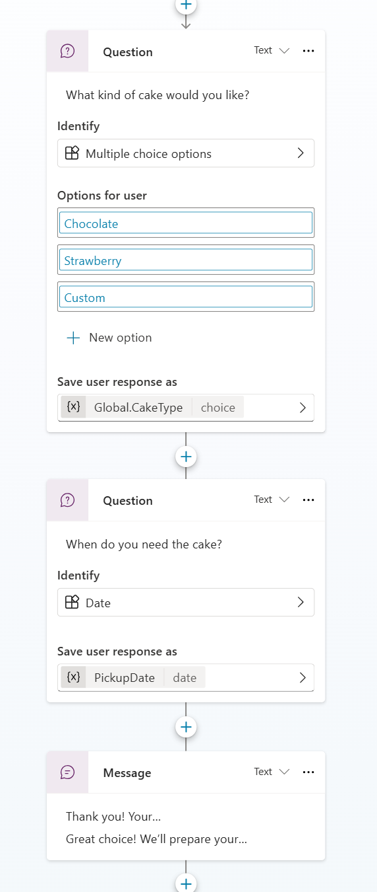
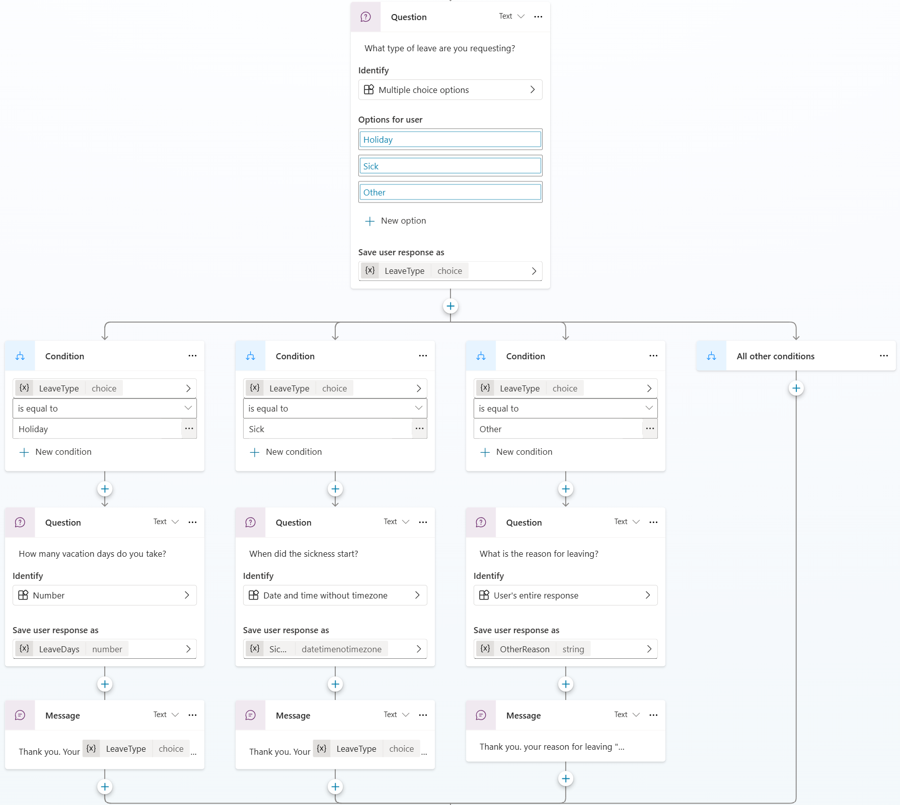
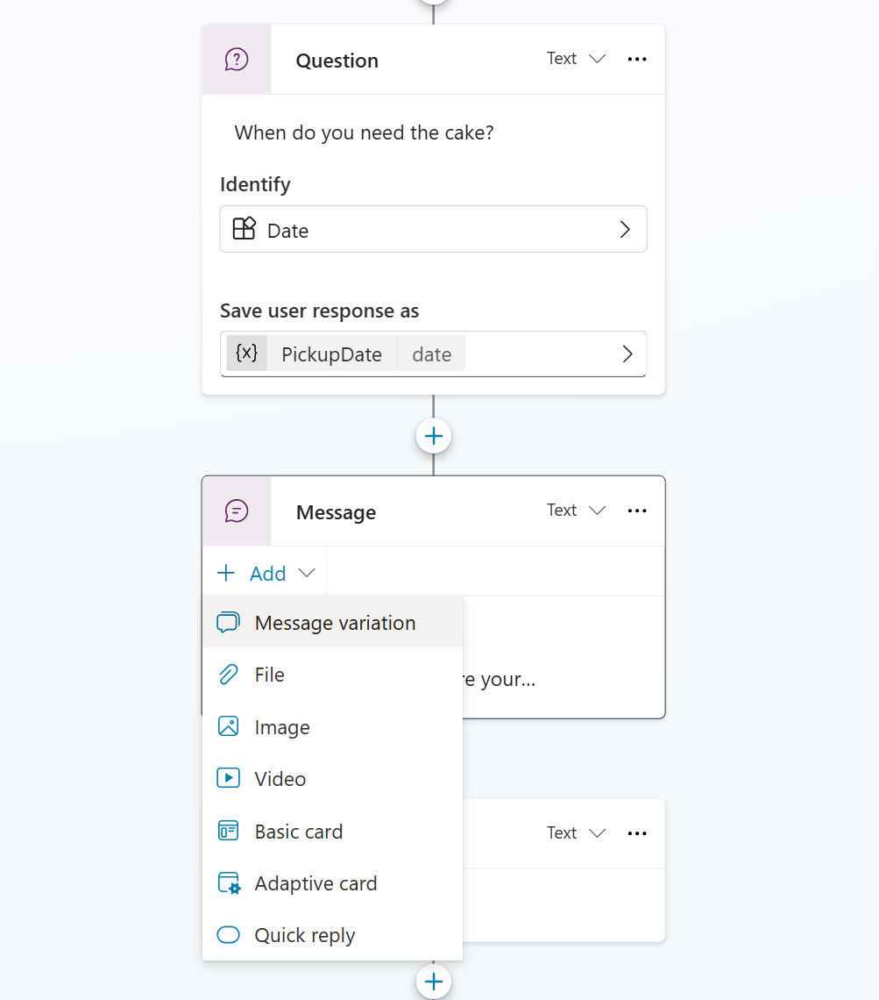

Lab 3 · ~60 minutes
Topics Mode: Designing Bakery Conversations
SweetBite Bakery doesn’t just want Q&A. They want the assistant to guide customers and staff through structured processes. In orchestration mode, topics are created with descriptions rather than trigger phrases.
🥐 What you'll do
- Create a topic for cake orders (guided flow)
- Create a topic for employee leave requests (branching)
- Save and reuse variables from user input
- Add message variations
Step 1: Create a topic for cake orders
- Go to Topics.
- Click + Add a topic.
-
Fill in:
- Name: Cake Order
- Description: Guide customers through ordering cakes, including type of cake and pickup date.
-
On the canvas:
- Add Ask a question → What kind of cake would you like?
- Options: Chocolate, Strawberry, Custom
- Save as CakeType
- Add Ask a question → When do you need the cake?
- Identify: Date
- Save as PickupDate
-
Add a message node using the variables:
- Insert variable → CakeType
- Insert variable → PickupDate
Thank you! Your {CakeType} cake will be ready on {PickupDate}. 🎂
Expected result

Step 2: Create a topic for employee leave requests
- Go to Topics.
- Click + Add a topic.
-
Fill in:
- Name: Leave Request
- Description: Help employees request different types of leave.
-
Add a question:
- What type of leave are you requesting?
- Options: Holiday, Sick, Other
- Save as LeaveType
-
Add branches:
- Holiday → Ask number of days (LeaveDays)
- Sick → Ask start date (SickStartDate)
- Other → Ask reason (OtherReason)
- Add a confirmation message.
Thank you. Your {LeaveType} request for {LeaveDays} days has been noted.
Expected result

Step 3: Add a message variation
- Open the Cake Order topic.
- Select the final Message node.
- Add a message variation.
Great choice! We'll prepare your {CakeType} cake by {PickupDate}.
- Save and test.
Message Variation

🎯 Checkpoint
- ✅ Created Cake Order topic with variables
- ✅ Created Leave Request topic with branching
- ✅ Added a message variation